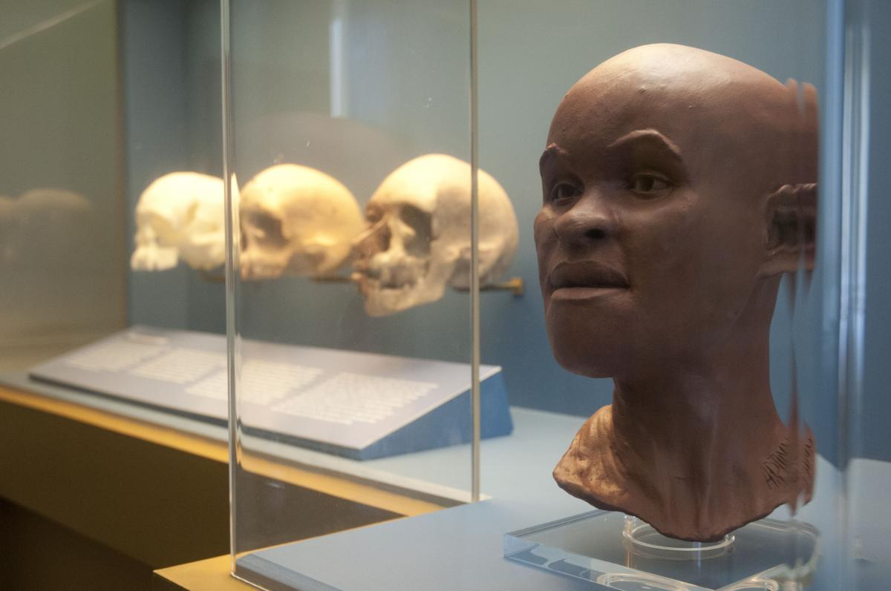

-

-

- 
ACERVO
A formação do acervo do Museu deu-se primeiramente pela transferência para sua sede, de instrumentos, máquinas e gabinetes dispersos em outras instituições, pela doação de objetos de arte e da Antiguidade pela família real, pelas coleções existentes na Casa dos Pássaros, pela coleção de mineralogia, conhecida como Coleção Werner, e por peças etnográficas provenientes das províncias do Brasil. Hoje, com um acervo cultural e científico relevante é considerado o maior museu de história natural da América Latina.
A atividade de memória do Museu Nacional /UFRJ está representada no seu acervo sob diversas formas:
- Acervo Bibliográfico formado de livros, folhetos, periódicos, multimeios, in-fólios, obras raras, mapas, teses e dissertações pertencentes à Biblioteca do Museu Nacional e da Biblioteca Francisca Keller, do Programa de Pós-Graduação em Antropologia Social (PPGAS);
- Acervo Científico composto por exemplares representativos da biodiversidade, fósseis, objetos etnográficos e arqueológicos, pertencentes aos Departamentos de Antropologia, de Botânica, de Entomologia, de Geologia e Paleontologia, de Invertebrados e de Vertebrados;
- cervo Documental constituído de material arquivístico, custodiado pela Seção de Memória e Arquivo (SEMEAR) e pelo Centro de Documentação em Línguas Indígenas (CELIN).